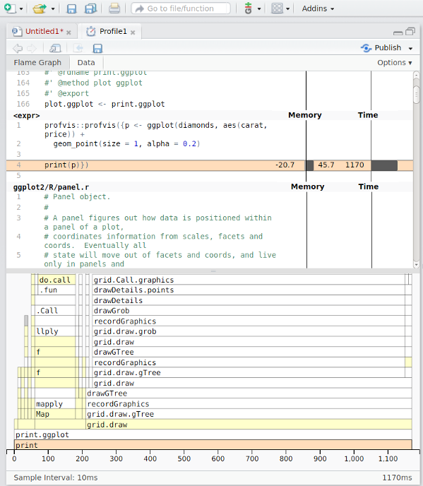

The RStudio IDE includes integrated support for profiling with profvis.
Profiling code
There are a number of ways to start and stop the profiler.
From the Profile menu, you can start and stop the profiler.
From the Profile menu, you can run a selected block of code with profiling.
From the editor pane’s code tool menu, you can run a selected block of code with profiling:
Finally, it’s also possible to use profvis by calling the
profvis() function, as demonstrated in the rest of the
documentation on this site.
Exploring profiles in RStudio
Profiles will open in a new tab in the RStudio IDE.

When viewed in RStudio, these profiles have some extra features:
Opening sources: If there are source refs for code that was executed, or if you ran code by using
source()or the Source menu in RStudio code editor, then double-clicking on a line of code in the profile viewer will open that file in the editor. This won’t be available if the code was run from the console, and is shown as being in. If you want to be able to view code in a package, see this FAQ. Opening and saving profiles: Profiles can be saved for sharing or viewing in the future. Profile files have extension
.Rprofvis. If you wish to share a profile for viewing in a web browser, you can simply rename the file to have an.htmlextension.Profiling Shiny applications: Entire Shiny applications can be profiled by starting the profiler before launching the application. To capture just a part of a Shiny session, you can start and stop the profiler while the application is running.
Publishing profiles: Profiles can be shared on RPubs by clicking on the Publish button. See this FAQ for more information.